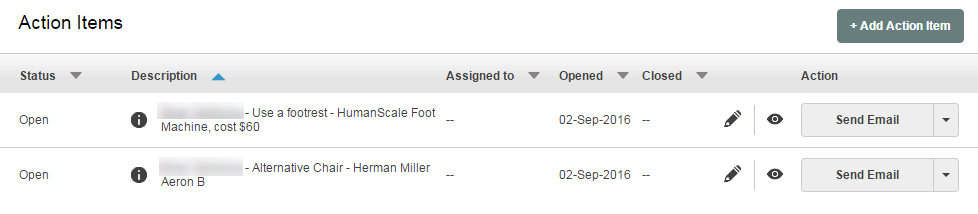
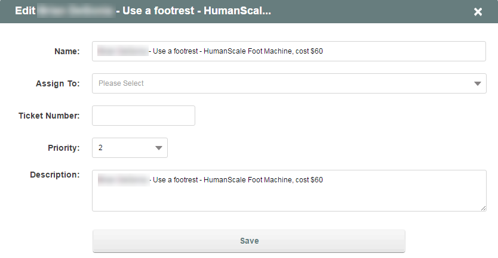
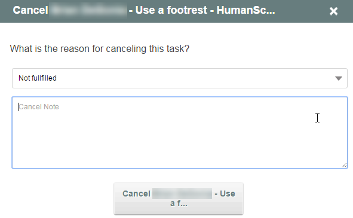

Upon completion of an evaluation cycle, any equipment specified in the worksheet will create Action Items for the case. Action Items can be assigned independently and tracked separately. Action items can be closed as either Implement or Not Implement, depending upon internal approvals.

Click the pencil icon to assign the action item. You can provide a ticket number and assign priority and provide descriptiive notes.

To cancel a case, choose Cancel from the Action column dropdown. You can then select the reason (Fulfilled or Not fullfilled) and provide a note.
